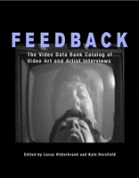

Historic documentation of the development of art-based, activist, and alternative media in the U.S.
Historic documentation of the development of art-based, activist, and alternative media in the U.S.


 Historic documentation of the development of art-based, activist, and alternative media in the U.S.
Historic documentation of the development of art-based, activist, and alternative media in the U.S.

|  |
FeedbackThe Video Data Bank Catalog of Video Art and Artist Interviewsedited by Kate Horsfield and Lucas Hilderbrandcloth EAN: 978-1-59213-182-2 (ISBN: 1-59213-182-4) |
Outstanding Academic Title, Choice, 2006
"Feedback should be in the library of every media scholar, teacher, and curator who ever addresses late twentieth century media art, performance art, or documentary. I would certainly recommend it to anyone in that position and will be delighted to possess a copy myself."
—Margaret Morse, University of California, Santa Cruz
Founded in 1976 at the inception of the media arts movement, the Video Data Bank is the leading resource in the United States for videotapes by and about contemporary artists. The collections include seminal works that, seen as a whole, describe the development of video as an art form originating in the late 1960s and continuing to the present.
The first printed catalog of the Video Data Bank's complete holdings, Feedback offers readers essays on the history of media arts, the Video Data Bank, video activism, experimental performance art, and the On Art and Artists Collection. It includes 325 frame grabs and stills from some of the collection's most important pieces and outlines the styles and directions taken by artists throughout the entire history of video art. An indispensable guide and reference for artists, students, teachers, and collectors, Feedback is an essential book for any film and video bookshelf.
Excerpt available at www.temple.edu/tempress
"The availability of portable video equipment in 1965 sparked a do-it-yourself revolution. From this simple advance in technology, profound cultural changes have sprung; artists, activists and ordinary people have discovered video as both 'a weapon and a witness.' Feedback is an invaluable guide to the birth and explosion of video art. Simultaneously a historical document and a primer for future innovation, Feedback takes stock of the past while shedding light into the future of the form."
—Tom Kalin, Film and Video Maker, and Associate Professor, Columbia University School of the Arts
"Feedback is an annotated guide described as the first printed catalog to the [Video Data Bank] collection built up over the last three decades. This is the leading resource in the U.S. for videotapes by and about contemporary artists.... [It] is a very useful guide to what is now an immense and still growing body of artistic work."
—Communications Booknotes Quarterly
"[L]andmark...concise, accurate, and authoritative. This is a must for all library collections even remotely interested in video art. As a text for browsing, or for researching the works created in this challenging medium, it is literally without peer. Essential."
—Choice
Introduction to the Video Data Bank Collections – Kate Horsfield
1. Busting the Tube: A Brief History of Video Art – Kate Horsfield
2. Grow Gills and Swim: The Evolution of Activist Video – Gregg Bordowitz
3. Vertical Hold: A History of Women's Video Art – Vanalyne Green
4. Performance Art and Experimental Video: Highlights from the Video Data Bank Collection – Peggy Phelan
5. Video Art Collection
6. Video Art Anthologies
7. On Art and Artists: An Introduction – Kate Horsfield
8. On Art and Artists Collection
Ordering Information
Artist Index
Title Index
Kate Horsfield co-founded the Video Data Bank with Lyn Blumenthal in 1976 at the School of the Art Institute of Chicago. She is currently Executive Director.
Lucas Hilderbrand is a Ph.D. candidate in cinema studies at New York University. His writings have appeared in Camera Obscura and Film Quarterly.
Cinema Studies
Art and Photography
Mass Media and Communications
Wide Angle Books, edited by Erik Barnouw, Ruth Bradley, Scott MacDonald, and Patricia Zimmermann.
The mission of Wide Angle Books is to document, chronicle, and honor those institutions that have worked effectively to maintain a public presence and public spaces for alternative forms of media. These books recognize that institutional support of media happens at a variety of levels in a film series, in a video distribution organization, in a transnational digital network, in a grassroots production organization and in locations across the globe. Individual volumes in the series focus on such forms of primary documentation as letters, institutional records, and oral histories, presented and contextualized by leading media history scholars.
© 2015 Temple University. All Rights Reserved. This page: http://www.temple.edu/tempress/titles/1669_reg.html.